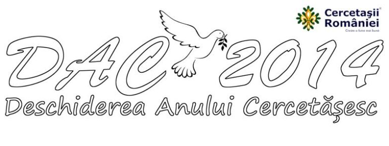

Tratat de Pace la Muzeul Satului

Organizația Națională „Cercetașii României” vă invită sâmbătă, 18 octombrie, începând cu ora 10.00 în incinta Muzeului Satului pentru a sărbători împreună Deschiderea Anului Cercetăşesc 2014-2015. Vă aşteptăm cu bucurie să descoperiţi frumusețea celei mai mari mișcări de tineret de pe glob și totodată să aflaţi ce fac cercetașii pentru a lăsa lumea un pic mai bună decât au găsit-o. La sfârșitul acestei săptămâni, Cercetașii României aniversează 101 ani de la apariția mișcării Scout în România și în același timp 25 de ani de la reînființare. Cu această ocazie, la București și Oradea, înarmați cu ingeniozitatea și creativitatea caracteristică, vor marca Deschiderea Anului Cercetășesc 2014-2015.
La sfârșitul acestei săptămâni, Cercetașii României bifează începutul celui de-al 101-lea an de la apariția mișcării cercetășești în România și în același timp 25 de ani de la reînființare. Cu această ocazie, la București și Oradea, cercetașii vor marca momentul prin două evenimente distincte de Deschidere a Anului Cercetășesc 2014-2015.
Dacă la Oradea aproximativ 300 cercetașii din Transilvania au de elucidat misteriosul „Caz 20” în care se investighează dispariția steagului cercetășesc, la București, aprope 450 de cercetașii se mobilizează pentru a construi în incinta Muzeului Satului un muzeul al păcii, în interiorul căruia vor delimita Ograda Patriotismului, Ograda Altruismului, Ograda Credinței și Ograda Echilibrului. Astfel, timp de 5 ore, ogrăzile vor forfoti de cercetași deciși să scoată la iveală cele 16 punte ale Tratatului de Pace, pe care la finalul evenimentului doresc să și-l asume, ca amintire a acestui moment pentru anii ce vor urma.
„Muzeul Păcii” își va deschide porțile sâmbătă, 18 octombrie, în incinta Muzeului Satului, cu începere de la ora 10:00. Organizația Națională „Cercetașii României” îi invită cu această ocazie pe toți cei interesați să ia parte la eveniment și să cunoască profilul și frumusețea celei mai mari mișcări de tineret de pe glob și totodată să afle cum fac cercetașii să lase lumea un pic mai bună decât au găsit-o.